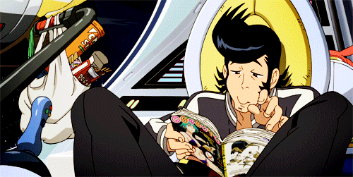
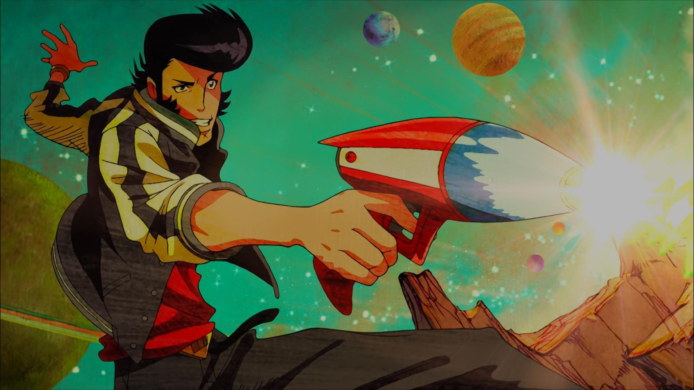

Space Dandy
"A Dandy Guy in Space"
A Space-filled Adventure
Space Dandy follows the misadventures of Dandy, an alien bounty hunter who is "a dandy guy in space", in search for undiscovered and rare aliens with his robot assistant QT and his feline friend named Meow. Dandy is unaware that he is being pursued by Dr. Gel of the Gogol Empire. The series has loose continuity, with several episodes featuring the main protagonists and antagonists dying, getting turned into zombies, or getting trapped in different dimensions for periods of time, only for them to show up as normal in the next episode. There are also many references to older science fiction, music, anime and Internet culture. Dandy, also known as Space Dandy, is the main titular character of Space Dandy. His main profession is being an alien hunter, although he is not very good at it. He is a charismatic, but sometimes dimwitted, individual who has made it his dream in life to own a restaurant chain.
My Favorite Characters
Space Dandy reunites a number of lead production staff members from Cowboy Bebop, including producer Masahiko Minami and director Shinichiro Watanabe. Its production involved as many as 70 animation creators and 20 musical artists as collaborators, with Watanabe insisting that artists could only use pre-1984 musical styles. Although character designer Yoshiyuki Itou is credited as an animation director, his designs were not standardized across the series, allowing for individual animators to express their style. The Adult Swim broadcasts initially used instrumental tracks by Mountain Mocha Kilimanjaro for these sequences due to licensing issues, but the eighth episode onward featured "Viva Namida", as have subsequent rebroadcasts of the first seven episodes. The English version is produced by Funimation in Fort Worth, Texas, using its local acting talent pool. The series' ADR voice directors include Zach Bolton and Joel McDonald. The series is also simulcasted at the same time as Japan by Animax Asia in South East Asia with both Japanese and English audio.